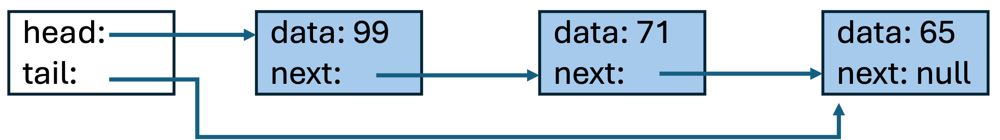
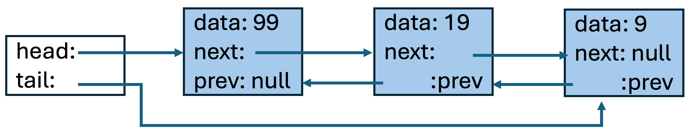

List ADT & Linked Lists in C++
Liting Zhang
University of West Florida
Outline
List ADT: operations and meaning (implementation-independent)
Singly-linked list: nodes,
head/tail, invariantsCore operations: append, prepend, search, insert-after, remove-after, remove-by-value
Traversal: iterative and recursive
Doubly-linked lists:
prevpointer + updated pointer rulesCircular lists: stopping condition changes
Complexity + common pointer bugs
Learning goals
After this lecture, you should be able to
Explain what the List ADT specifies (and what it does not)
Draw linked lists correctly and state key invariants
Identify which pointers must change for each list operation
Reason about empty / one-node / middle / tail cases
Compare singly vs doubly linked lists (trade-offs)
Big idea
The List ADT tells us what a list can do. A linked list decides how to do it using nodes and pointers.
ADT = behavior + operations (no storage details)
Implementation = nodes + pointers + invariants
Most bugs come from missing special cases (empty / tail updates / deleting nodes)
Always draw the pointer picture first, then write code.
What is a List ADT?
Definition: an ordered collection of elements.
There is a concept of “first”, “second”, … “last”
The ADT defines operations and what they mean
The ADT does not force arrays or pointers
Common list operations
Append(x): add
xto the endPrepend(x): add
xto the frontInsertAfter(node, x): add
xafter a given nodeRemoveAfter(node): remove after node (or remove head if node is null)
Remove(x): remove first occurrence of
xContains(x): return true/false
Performance depends on implementation.
Implementation choices
Dynamic array: fast indexing, expensive middle insert/delete
Linked list: flexible insert/delete, slower indexing/search
Singly-Linked List (implementation of List ADT)
A singly-linked list is a concrete way to implement a list ADT.
-
Each node has:
data (the value)
next (pointer to the next node)
-
The list has:
head pointer (first node)
tail pointer (last node)
The list grows/shrinks dynamically.
Each node knows only about the next one.
Cannot directly access elements by index.
Visual model + invariants

Empty: head == nullptr and tail == nullptr
Non-empty: tail->next == nullptr
Traversal follows next pointers starting from head
Node class (typical)
template <typename T>
class Node {
T data;
Node<T>* next;
public:
Node() : next(nullptr) {}
Node(const T& data) : data(data), next(nullptr) {}
};Append (add to end)
Two cases: empty vs non-empty.
template <typename T>
void Append(Node<T>* newNode) {
if (newNode == nullptr) return;
// Ensure the new node does not carry an old link
newNode->next = nullptr;
// Case 1: empty list
if (head == nullptr) {
head = newNode;
tail = newNode;
return;
}
// Case 2: non-empty list
tail->next = newNode;
tail = newNode;
}Append is O(1) only if you maintain tail.
Prepend (add to front)
Time complexity is O(1)
template <typename T>
void Prepend(Node<T>* newNode) {
if (newNode == nullptr) return;
// New node becomes the first node
newNode->next = head;
head = newNode;
// If the list was empty before, head and tail should both point to newNode
if (tail == nullptr) {
tail = newNode;
}
}Search / Contains
Searches for the first node containing a specific value.
Sequential traversal from head to tail.
Returns pointer to the node if found, else null.
Time complexity is O(n)
template <typename T>
Node<T>* Search(const T& target) const {
Node<T>* current = head;
while (current != nullptr) {
if (current->data == target) {
return current; // Found
}
current = current->next; // Move forward
}
return nullptr; // Not found
}InsertAfter (given a node)
Three cases: empty list, insert after tail and insert in middle.
void InsertAfter(Node<T>* currentNode, Node<T>* newNode) {
if (newNode == nullptr) return;
// Make sure the node doesn't accidentally keep an old link.
newNode->next = nullptr;
// Case 1: empty list
if (head == nullptr) {
head = newNode;
tail = newNode;
return;
}
// If list is not empty, caller must provide a valid currentNode.
if (currentNode == nullptr) return;
// Case 2: insert after tail
if (currentNode == tail) {
tail->next = newNode;
tail = newNode;
return;
}
// Case 3: insert in the middle
newNode->next = currentNode->next;
currentNode->next = newNode;
};RemoveAfter
Convention used in many course implementations:
if cur == nullptr, remove the head.
template <typename T>
void RemoveAfter(Node<T>* curNode) {
// Special case: remove head
if (curNode == nullptr) {
if (head == nullptr) return; // empty list
Node<T>* removed = head;
Node<T>* sucNode = head->next; // successor of head
head = sucNode;
if (sucNode == nullptr) { // removed last item
tail = nullptr;
}
delete removed;
return;
}
// Remove node AFTER curNode (only if it exists)
if (curNode->next != nullptr) {
Node<T>* removed = curNode->next;
Node<T>* sucNode = curNode->next->next; // successor after removed
curNode->next = sucNode;
if (sucNode == nullptr) { // removed tail
tail = curNode;
}
delete removed;
}
}Remove(value)
Track prev so you can reconnect around the removed node.
template <typename T>
bool RemoveValue(const T& targetValue) {
Node<T>* curNode = head;
Node<T>* prevNode = nullptr;
// Find the first node whose data == targetValue
while (curNode != nullptr && curNode->data != targetValue) {
prevNode = curNode;
curNode = curNode->next;
}
// Not found
if (curNode == nullptr) {
return false;
}
// curNode is the node to remove.
// Our RemoveAfter convention:
// RemoveAfter(nullptr) removes head
// RemoveAfter(prevNode) removes prevNode->next
RemoveAfter(prevNode);
return true;
}Traversal (iterative)
template <typename T>
void Traverse(Node<T>* head) {
Node<T>* cur = head;
while (cur != nullptr) {
std::cout << cur->data << " ";
cur = cur->next;
}
}Traversal (recursive)
template <typename T>
void TraverseRec(Node<T>* node) {
if (node == nullptr) return;
std::cout << node->data << " ";
TraverseRec(node->next);
}Still O(n); recursion uses the call stack.
What changes?
Each node stores both
nextandprevBackward traversal becomes possible
Insert/remove in the middle updates two directions
Trade-off: more memory and more pointer updates
Visual model + invariants

Empty:
head == nullptrandtail == nullptrNon-empty:
head->prev == nullptrandtail->next == nullptrFor any middle node
x:x->next->prev == xandx->prev->next == x
DNode class (typical)
template <typename T>
class DNode {
public:
T data;
DNode<T>* next;
DNode<T>* prev;
DNode() : data(), next(nullptr), prev(nullptr) {}
DNode(const T& value) : data(value), next(nullptr), prev(nullptr) {}
};InsertAfter (given a node)
Three cases: empty list, insert after tail, insert in middle.
template <typename T>
void InsertAfter(DNode<T>* currentNode, DNode<T>* newNode) {
if (newNode == nullptr) return;
// Detach any old links (safety for teaching examples)
newNode->next = nullptr;
newNode->prev = nullptr;
// Case 1: empty list
if (head == nullptr) {
head = newNode;
tail = newNode;
return;
}
// Non-empty list: caller must provide a valid currentNode
if (currentNode == nullptr) return;
// Case 2: insert after tail
if (currentNode == tail) {
newNode->prev = tail;
tail->next = newNode;
tail = newNode;
return;
}
// Case 3: insert in the middle
DNode<T>* sucNode = currentNode->next;
newNode->prev = currentNode;
newNode->next = sucNode;
currentNode->next = newNode;
sucNode->prev = newNode;
}RemoveNode (given a node)
Handles: only node, remove head, remove tail, remove middle.
template <typename T>
void RemoveNode(DNode<T>* target) {
if (target == nullptr) return;
if (head == nullptr) return;
// Case 1: removing the only node
if (target == head && target == tail) {
head = nullptr;
tail = nullptr;
delete target;
return;
}
// Case 2: remove head
if (target == head) {
DNode<T>* sucNode = head->next;
head = sucNode;
head->prev = nullptr;
delete target;
return;
}
// Case 3: remove tail
if (target == tail) {
DNode<T>* preNode = tail->prev;
tail = preNode;
tail->next = nullptr;
delete target;
return;
}
// Case 4: remove in the middle
DNode<T>* preNode = target->prev;
DNode<T>* sucNode = target->next;
preNode->next = sucNode;
sucNode->prev = preNode;
delete target;
}Traversal (forward)
template <typename T>
void TraverseForward() const {
DNode<T>* cur = head;
while (cur != nullptr) {
std::cout << cur->data << " ";
cur = cur->next;
}
}Traversal (backward)
template <typename T>
void TraverseBackward() const {
DNode<T>* cur = tail;
while (cur != nullptr) {
std::cout << cur->data << " ";
cur = cur->prev;
}
}This is the main benefit: reverse traversal is O(n) without extra work.
Circular singly-linked list
Tail points back to head (no
nullptrat the end)Traversal stops when you return to the starting node
head
|
v
+----+ +----+ +----+
| 9 |--> | 19 |--> | 99 |
+----+ +----+ +----+
^ |
|____________________|Typical time complexities
Append: O(1) with
tail, otherwise O(n)Prepend: O(1)
Search / Contains: O(n)
InsertAfter (given node pointer): O(1)
RemoveAfter (given node pointer): O(1)
Remove(value): O(n)
Pointer bug checklist
Missing empty-list case (head/tail updates)
Removed last node but forgot to update
tailOverwrote
nextbefore saving the old successorMemory leak: removed node not deleted
Dangling pointer: used node after deletion